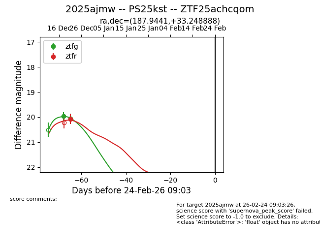
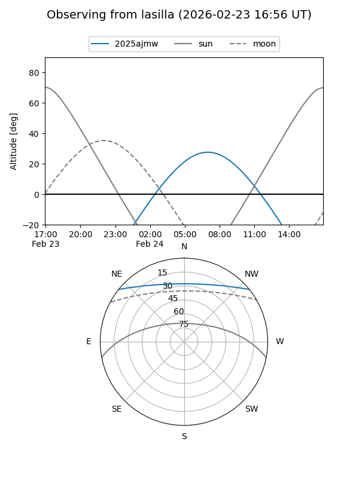
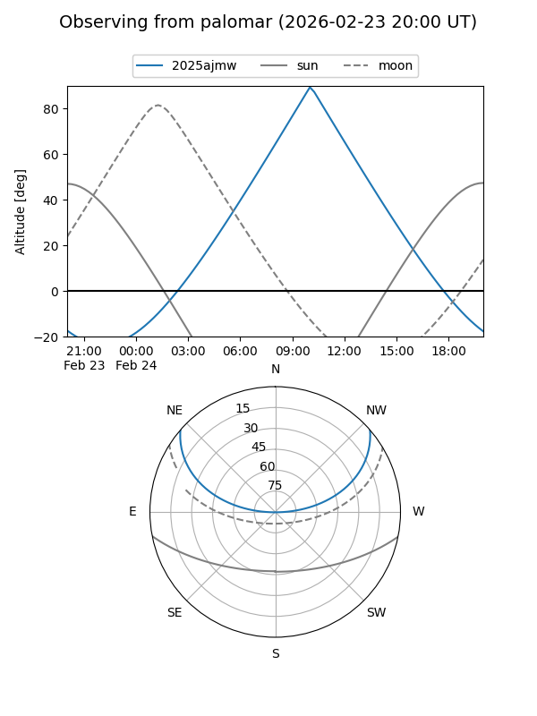

2025ajmw
Target 2025ajmw at 2025-12-31 17:00
Aliases and brokers:
FINK:
Lasair:
ALeRCE:
TNS:
YSE:
alt names
ZTF25achcqom (ztf,fink_ztf)
2025ajmw (tns,yse)
PS25kst (panstarrs)
Coordinates:
equatorial (ra, dec) = 187.9441,+33.24889
equatorial (HMS+DMS) = 12:31:46.59,+33:14:56.00
galactic (l, b) = (156.4899,+82.55176)
Flags:
Photometry:
last ztfg=19.97, ztfr=20.08
1 ztfg, 1 ztfr detections
Lightcurve

Visibility


Additional plots